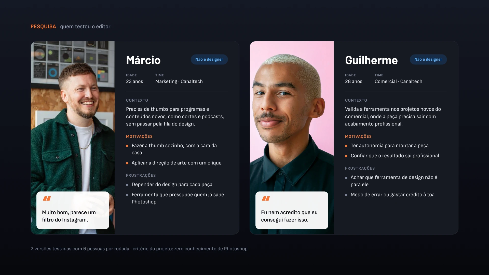
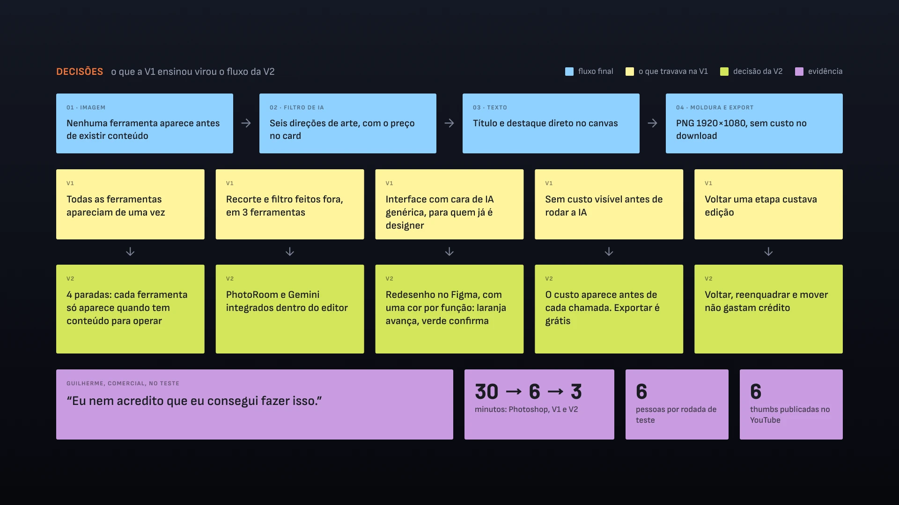

PROJETO REAL · PRODUTO INTERNO EM USO NO CANALTECH
Uma thumb com a cara da casa, feita por quem
não é designer.

O Canaltech publica vídeo todo dia, e toda thumbnail passava pelo time de design. O ThumbDrop é um editor interno que entrega a estética da casa para quem produz o conteúdo, sem depender de Photoshop. Duas versões: a primeira validou que o fluxo existia; a segunda virou a ferramenta que está em uso hoje.
Sobre os números.
Em uma produção registrada, uma thumb publicada ficou pronta em três minutos. O fluxo antigo levava, em média, 30 minutos no Photoshop. Filtros e recorte foram testados com as APIs reais do Gemini e do PhotoRoom. O custo de API está na seção 06.
CLIENTE
Canaltech
ferramenta interna de thumbnails
PAPEL
Product design, UX
e design engineer
ENTREGAS
Pesquisa · 2 versões
design system · produto em uso
FEITO COM
Claude Design · Claude Code ⇄ Figma via MCP
APIs do Gemini e do PhotoRoom
PERÍODO
2026 · solo
2 versões, 6 pessoas por rodada
01 · O PROBLEMA
A thumb não podia esperar o designer.
Thumbnail decide o clique, e o canal publica todo dia. Quando só o design sabe fazer uma com a cara da casa, cada vídeo entra numa fila.
30 min
média histórica de uma thumb no fluxo antigo, no Photoshop
1
time de design atendendo todas as thumbs do canal
3
ferramentas numa thumb na V1 sem API: editor, site do PhotoRoom e site do Gemini
0
conhecimento de Photoshop exigido — o critério do projeto
02 · DA PRIMEIRA VERSÃO À FERRAMENTA EM USO
Duas versões, duas perguntas diferentes.
A primeira versão respondia "isso funciona?". A segunda, "quem não é designer consegue usar?". Os vídeos são duas produções diferentes, do início ao fim — não um teste controlado.
A · V1 · FEITA NO CLAUDE DESIGN
Primeiro o fluxo. Depois a IA dentro dele.
A primeira versão nasceu no Claude Design, sem passar pelo Figma, e foi validada em duas etapas. Na primeira, sem API nenhuma: o recorte era feito no site do PhotoRoom e o filtro, no site do Gemini. Quando o fluxo provou que funcionava, as duas APIs entraram no editor, ainda no Claude Design — e ele funcionou de novo, agora sem sair da ferramenta.
O que ela não resolvia era a experiência. A interface saída do Claude Design tinha cara de IA genérica e pedia alguém que já soubesse operar uma ferramenta de design. Testei com o time e ouvi o que travava, o que funcionava e o que faltava para quem não é designer — e foi isso que a versão final redesenhou.
B · VERSÃO FINAL · PAPEL → FIGMA ⇄ CÓDIGO VIA MCP
Ida e volta entre o design e o código.
Com essas respostas, voltei para o papel e desenhei à mão a experiência que eu queria. O Claude Code montou o wireframe a partir dessa referência, e pelo MCP ele foi para o Figma, onde fiz o trabalho de design: evoluí cada versão até o protótipo final, pensado para quem não é designer.
Do Figma, o protótipo voltou pelo MCP para o Claude Code, que programou a ferramenta para usar as APIs — sem nenhuma chave dentro do código. O handoff apoiou a conferência nos dois sentidos: não é sincronização automática, é um processo assistido de análise, adaptação e conferência.
A primeira versão, com o recorte e o filtro feitos fora da ferramenta.
A versão final, com recorte e filtro dentro do editor. Três minutos, thumb publicada no canal.
QUEM TESTOU · PESQUISA QUALITATIVA

O QUE A SEGUNDA VERSÃO RESOLVEU

03 · AS DECISÕES QUE SUSTENTAM O FLUXO
Quatro paradas, e uma regra de cor consistente.
O editor não é uma tela com todas as ferramentas. É um caminho: cada parada só mostra o que faz sentido naquele ponto.
01
Imagem. Sem imagem não há thumb: nenhuma ferramenta aparece antes de existir conteúdo.
02
Filtro de IA. Seis direções de arte, cada card com a própria foto já filtrada e o preço escrito. Seguir sem filtro custa zero.
03
Texto. Título, destaque, peso e alinhamento, com manipulação direta no canvas.
04
Moldura e export. Quatro opções — Canaltech, CT Eletro, Minha cor e Sem moldura — e o PNG em 1920 × 1080. O recibo mostra o custo antes do download, que não cobra crédito.
05
A regra de cor. Um laranja por tela, na ação que avança; azul marca onde você está; verde confirma o que já aconteceu; vermelho só para falha.

O crédito só é debitado quando a IA roda.
Reenquadrar, mover, trocar a cor do texto e refazer a moldura são operações locais e não consomem crédito. Se a geração falhar, o saldo do editor volta e a composição fica intacta. Cancelar interrompe a espera, mas a prévia já foi cobrada — e a tela avisa isso antes.
04 · CRAFT
O que faz parecer um editor de verdade.
Três coisas que ninguém elogia quando estão certas, e que entregam o produto quando estão erradas.

01
Zoom ancorado no cursor. O pixel sob o cursor continua sob o cursor — só se percebe quando falta.
02
Réguas magnéticas. Um motor de encaixe só, para imagem e texto. A guia aparece no gesto e some ao soltar.
03
Camadas com trava progressiva. Cada nova imagem bloqueia as anteriores; a camada desejada pode ser selecionada pela lista para voltar a editá-la.
A decisão mais cara do projeto: compactar em vez de rolar.
Deixar o painel rolar era a saída fácil — e num painel de 320px isso esconde metade das ferramentas. Os estados principais foram compactados para caber em 1440 × 900 e 390 × 844, sem overflow horizontal de 360 a 1440 px no Chromium. Com conteúdo adicional, o painel usa rolagem vertical.
05 · O SISTEMA
Um sistema de 49 variáveis no Figma, orientando o código.
O Figma orientou a implementação, e variáveis CSS organizaram a base. O CTA usa um laranja próprio, #B85829: branco sobre o laranja da marca dá 2,73:1 e reprova AA.
49
variáveis no Figma, em 5 coleções, todas com escopo definido
9
estilos de texto, com o tamanho ligado à variável
7
conjuntos de componentes com variantes, além de 13 componentes avulsos
2
modos, desktop e mobile, nas coleções de tipografia e layout
Desktop e mobile compartilham a mesma base.
Desktop e mobile usam a mesma base visual e os mesmos componentes, com ajustes responsivos para cada largura. No Figma, as coleções de tipografia e de layout têm os modos Desktop e Mobile.

06 · ONDE ESTÁ HOJE
Em uso, com o custo coberto por créditos.
As seis thumbs publicadas foram feitas por mim. Marketing, comercial e vídeo estão validando a ferramenta em peças experimentais, para canais e projetos que ainda não foram ao ar. O Photoshop segue como ferramenta principal do design.
6
thumbs publicadas, todas feitas por mim — 3 no Canaltech e 3 no Canaltech Eletro
3 min
numa produção registrada, contra a média histórica de 30 min no Photoshop
R$ 0
de custo incremental nos filtros de IA hoje, coberto por créditos Google disponíveis — o custo econômico existe
2
canais com thumbs publicadas: Canaltech e Canaltech Eletro
Canaltech
Canal de tecnologia do Canaltech no YouTube. Thumbs feitas no ThumbDrop estão entre os vídeos publicados.
youtube.com/canaltech ↗
Canaltech Eletro
Canal de eletrodomésticos e linha branca do Canaltech. As peças estão no feed, junto com as demais.
youtube.com/@CTEletro ↗
UMA DELAS É PUBLI
A thumb da BYD saiu num vídeo patrocinado.
A BYD | Song Pro Flex DM-i foi publicada como publieditorial no Canaltech — é a thumb do vídeo da seção 02. Em publieditorial o padrão de acabamento é o do anunciante, o que torna esta a peça mais exigente da lista.

Sobre o custo, com honestidade.
Cada filtro de IA passa pela API do Google (Gemini); cada recorte, pela do PhotoRoom — as duas testadas em chamadas reais. As chaves não ficam no código: quem abre o ThumbDrop informa a do Gemini e a do PhotoRoom na primeira tela, e elas ficam só no navegador — por isso o projeto pode ser publicado sem expor credencial nenhuma. Hoje o custo incremental dos filtros está coberto pelos créditos que o Grupo Magalu disponibilizou para validação interna. O custo econômico existe e volta a aparecer se os créditos acabarem ou o volume aumentar. O saldo na barra é um teto de gasto local, que o próprio usuário ajusta — não o saldo da conta do provedor.
07 · EM ABERTO
O que eu não resolvi.
O produto estar em uso torna estas pendências mais visíveis, não menos. São as quatro que eu levantaria primeiro se alguém assumisse a ferramenta amanhã.
A continuidade dos créditos não é minha decisão
Os créditos Google vieram do Grupo Magalu para validação interna; a continuidade é comercial. Sem eles, uma thumb custa ≈ R$ 0,91 com uma tentativa de filtro e R$ 1,41 com três — pelos preços de referência do script.
Não medi a taxa de descarte
Quantos filtros são aplicados e recusados antes do OK? É esse número que dá o custo real por thumb utilizável — e, com o crédito rodando, dá para coletar sem pagar para descobrir.
Seis thumbs ainda não medem o impacto
As seis thumbs publicadas foram feitas por mim, e o uso pelos outros times ainda é experimental. Medir quanto a ferramenta substitui do fluxo antigo depende de volume feito por outras pessoas.
Sem dado de desempenho
Nenhum CTR ou view atribuído às thumbs feitas aqui. O resultado de um vídeo depende de pauta, título e algoritmo; isolar o efeito da thumb exige um teste que ainda não montei.
08 · MAIS
Outros projetos
Nega Nagô
O catálogo de uma trancista virou agendamento sem sair do WhatsApp. Pesquisa, design system e front-end — no ar em neganago.com, com a disponibilidade saindo da agenda dela.
CT em Campo · Canaltech × Netshoes
Uma ativação de Copa que não cabia no template do portal. Superfície dedicada, brandbook, motion e código — sem anúncio, recomendação ou concorrente dividindo a tela.
Disponível para trabalhar
Desenho, escrevo o código e digo o que não deu certo.
Treze anos de design, cinco deles no Canaltech entre design system, marketing e comercial. Se você tem uma superfície que precisa sair pronta e medida, e não especificada, me chama.
© 2026 Erick Teixeira
oerickteixeira@gmail.com · São Paulo